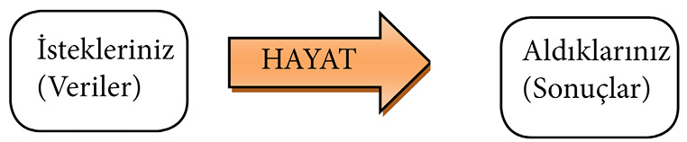

BÖLÜM 2 - BÜYÜK DÜŞÜNMEK
• İstekleriniz (veriler) aldıklarınız (sonuçlar) olacaktır.
• Küçük şeyleri düşünmeye alışkın zihinleri, büyük hayaller korkutabilir.
• Hayallerimizi kısıtlamaya kalkışmak, uzaya sınırlar çizmeye benzer; gerçekdışıdır.
BÜYÜK DÜŞÜNMEK
• İstekleriniz (veriler) aldıklarınız (sonuçlar) olacaktır.
Bir çiftçinin oğlu olarak dünyaya gelen Henry Ford (1863-1947), çocukluk yıllarında zamanının çoğunu kendi kurduğu küçük atölyede geçirdi. Hele cep saatlerini tamir etme konusunda oldukça iyiydi. Henry Ford yaşam deneyimlerinden yola çıkarak “Eğer gelecek hakkında düşünmezseniz, asla bir geleceğiniz olmaz,” diye tavsiyede bulunuyor.
Yıllar sonra kurduğu otomobil fabrikasında seri üretime geçti ve böylece otomobil fiyatlarının ucuzlamasını sağladı. 1908 yılında ürettiği Model T aracından, aynı model ve renkte, 1927 yılına kadar 15 milyondan fazla sattı. “İnsanlara ne istediklerini sorsaydım, daha hızlı giden at üretirdim,” diyen Henry Ford, iş alanındaki büyük fikirleri ve onları hayata geçirme cesaretiyle insanlık yaşamının değişmesinde önemli rol oynadı.
Küçük işlerle uğraşmaya, küçük düşünmeye devam ederseniz nasıl bir sonuç bekliyorsunuz? Büyük düşünme, bütünü görebilme, zihnini var olanın ötesinde yeni yerler keşfetmeye ayarlama sonucu, bugün olandan daha fazlasını alırsınız. İstekleriniz (veriler) aldıklarınız (sonuçlar) olacaktır. Sahilde küçük bir kumdan kule yapmaya niyetlenenlerin yüzde kaçı daha büyüğüne ulaşmıştır.
İstekleriniz
(Veriler)

“Büyük hayaller kurun. Neyi hayal edersen onu olursun.”
James Allen (1864-1912)
Bir fabrikanız olmasını arzuluyorsanız;
küçük bir atölyenin hayalini kurmayın,
Büyük kazançlar arzuluyorsanız;
az gelirin hayalini kurmayın,
Yüksek bir mevki arzuluyorsanız;
daha aşağısının hayalini kurmayın,
Dünya çapında bir şöhret arzuluyorsanız;
yerel olanın hayalini kurmayın…
Yaşam maratonunda, hangi dalda olursa olsun (iş, para, sağlık, mutluluk, başarı vs.) bu yarışın sonundaki büyük ödülü hedefler ve bir haritayla yola çıkarsanız etapları bir bir aşarak ona doğru yol alırsınız.
Önce düşüncelerde yaşarız her şeyi. Orada kendimizi kısıtlarız veya büyük hayallere yelken açarız. Düşüncelerdir her şeyin başlangıcı.
Yaşantımız, hayallerimizin büyüklüğü ölçüsünde genişler ya da daralır. Bugüne dek kurduğumuz hedeflerin ötesinde bir şeyler hayal etmeye alıştıralım kendimizi. Bakışlarımızı her zamankinden daha yükseğe çevirelim.
Michael Dell, daha küçük yaşlarda pul kolleksiyoncuları için arkadaşlarından topladığı pullardan oluşan bir katalog hazırladı. Ardından dönemin bu konuyla ilgili Linn’s Stamp Journal dergisine “Dell’in Pulları” adı altında reklam verdi. Bin dolar kazandığında o günlerde müzayede salonlarında satılan değerli pulları, müşteriye direkt ulaştırmanın daha kârlı olduğunu gördü.
Michael, ilkokul sıralarında reklamını gördüğü, tek sınavla lise diploması veren firmaya başvurarak eğitim hayatını daha hızlı tamamlamayı düşündü. Ancak sınav kâğıdını eve getiren hanım, karşısında kırmızı bornozuyla 8 yaşında bir çocuk görünce, bu hayali suya düştü.
Öğretmeninin verdiği proje ödevine, o yıl abone yaparak gazetelerden kazandığı para olan 18 bin doları yazdığında öğretmeni bir sıfırın fazla olduğunu düşünerek sildi. Fakat tek fazlalık onun o yıl öğretmeninden daha fazla kazandığıydı.
“Yaşam bana, kendisi şu gizi verdi; bak, dedi bana, ben her zaman kendi kendisini aşması gereken şeyim.”
Nietzsche (1844-1900)
15. doğum gününde kendisine bilgisayar hediye edildiğinde merakla tüm parçalarını söktü. Büyük paralar ödeyerek aldıkları hediyenin parçalara ayrılmasıyla çılgına dönen ailesine: “Ben sadece nasıl çalıştığını görmek istiyordum,” cevabını verdi. Bu merakı, onun geleceğini şekillendirecek şu bilgiyi de öğrenmesini sağladı: Bilgisayar parçaları toplam 700 dolar, ancak bilgisayarın piyasadaki satış fiyatı 3000 dolardı. Öyleyse ne yapılmalıydı? Çocukluğunda aracıyı devreden çıkararak sattığı pullarda olduğu gibi, doğrudan son kullanıcıya ulaşarak düşen fiyat müşteriye yansıtılmalıydı: Direkt satış modeli.
18 yaşında ailesinin isteğiyle girdiği tıp fakültesinde, parçalarını kendisi birleştirerek daha ucuza mal ettiği bilgisayarları satmaya başladı. Bu sebeple dersleriyle yeterince ilgilenememesi üzerine ailesi konuşmak için öğrenci yurduna geldi. Michael, bilgisayarları arkadaşının odasındaki banyoya sakladı. Ortalıkta bilgisayar olmamasına rağmen babası, onun bu tutkusunun farkında olarak:
“Bu bilgisayar saçmalığını bir kenara bırakıp okuluna odaklanmalısın,” dedi. “Önceliklerini iyi ayarla. Ömrünü neye harcamak istiyorsun?”
Michael Dell’in hayalleri büyüktü: “IBM ile yarışmak istiyorum!”
İdeallerine ve başarılı olacağına olan inancıyla istemeyerek gittiği fakülteden ayrılarak, büyük düşünü gerçekleştirmek için, 19 yaşında kendi şirketini kurdu. Üçte bir fiyata sunduğu ürünlerle bilgisayar pazarını altüst eden Michael Dell; dönemin güçlü bilgisayar şirketlerinin kısa süre sonra piyasadan çekilmesine neden oldu.
27 yaşına geldiğinde ABD’nin en genç CEO’suydu (Chief Executive Officer/İcra Kurulu Başkanı). Michael Dell, dünyanın en zenginleri listesinde ön sıralarda yer alıyor.
Şunu çok iyi biliyoruz ki neyi hedeflersek ona doğru yol alırız. Bu her seferinde hedeflerimize kesinlikle ulaşacağımız sonucunu doğurmayabilir elbette ama bizi en azından ilkinden daha ileriye taşıyacaktır.
“En büyük işler büyük hayal sahipleri tarafından başarılmıştır.”
George William Russel (1867-1935)
• Küçük şeyleri düşünmeye alışkın zihinleri büyük hayaller korkutabilir.
“Yüksek fikirler, yüksek dağlara benzer, alışık olmayanları ürkütür,” diyor şair ve yazar Cenap Şahabettin (1870-1934). İstediğiniz her neyse, onu düşleyebiliyorsanız elde etme hakkına da sahipsiniz.
Düşleyebildiğiniz her şey sizin olabilir. Fakat bugüne dek düşlerinizi açan, zenginleştiren, büyüten, çeşitlendiren ve esnekleştiren bir düşünce şeklinden uzak yaşamışsanız; işe öncelikle buradan başlamalısınız. Çünkü kısıtlanmış düşünceler, hayaller cılız, küçük ve renksiz olur. Bu sebeple işin kaynağını gürleştirmek, büyütmek ve renklilik kazandırmak gerekir. Yoksa ne yapacağı konusunda şaşırmış, sınırlı, küçük işlerle uğraşan bir yaşam sürmeye devam edilir.
“Gözün yükseklerde olmasın, elde edemezsen üzülürsün,” diye dost tavsiyesinde bulunurlar; dikenli tellerle ördükleri sınırlarda yaşayan dostlar. Bu sınırlar onlar için son noktadır, bir adım ilerisi yoktur; gerekirse geri adım atmaya da razıdırlar. En son ne zaman sınırlarımızı zorladık. En son ne zaman gözümüzü yükseklere diktik ve bir gün orada yerimizi alacağımızın hayalini kurduk?
“Dalın ucuna gitmekten korkma, meyve oradadır.”
Aldous Huxley (1894-1963)
“İlerle harikulade yaratık! Bilimin yol gösterdiği yere git. Git, Dünya’yı ölç, havayı tart,
gelgitleri say, gezegenlere yörüngelerini öğret, eski zamanları düzelt ve Güneş’i düzenle.”
Alexander Pope (1688-1744)
•Hayallerimizi kısıtlamaya kalkışmak, uzaya sınırlar çizmeye benzer; gerçekdışıdır.
Ormanın derinliklerinde kuyunun içinde, bir kurbağa yaşardı kendi halinde.
Bu kurbağanın tüm hayatı, seyretmekten ibaretti gökyüzündeki yıldızları.
Bir gün kuyuya düşen başka bir kurbağayla, tüm yaşantısı değişti bir anda.
Yeni gelen hemen tırmanmaya çalıştı:
“Dostum kuyunun çıkışı buradan mıydı?”
Ev sahibi bozmadı hiç istifini, anlamadı yeni gelenin gitme isteğini. Sakin bir şekilde yüzdü ve: “Galiba sen düşerken kafanı çarptın,” dedi. “Bu kadar suyu ve yıldızları başka hangi kuyuda bulacaksın?”
Aşağıya düşen bir ara durakladı, ardından yanına yaklaşıp durumu açıkladı:
“Belli ki adımını atmamışsın sen hiç kuyudan dışarı; sadece bu kadar mı sanırsın gökyüzündeki yıldızları?”
Ev sahibi anlamadı bu söylenenleri, gökyüzü kuyunun ağzı kadar değil miydi?
Birlik olup hemen çıktılar kuyudan. Çıkar çıkmaz ev sahibi kurbağa bayıldı, gökyüzündeki yıldızların çokluğundan...
Hayatımızı sadece var olandan ibaret sanırız. Bu düşüncemizle kendi kendimizi sınırlarız. Elbette her büyük iş bir anda olmaz, küçük adımlar atılmadan da asıl hedefe ulaşılmaz. Kimin küçük düşünürse kafası, kuyunun ağzı kadardır yaşantısı... Her kim de büyük düşünür, kuyudan çıkmaya çabalar; dışarıda onu bekler, sonsuz sayıda yıldızlar...
“Küçük işlerle uğraşanlar çok zaman büyük işleri göremeyecek hale gelirler.”
Benjamin Franklin (1706-1790)
“Ulaşılabilir düşler kurmalıyım” demek düşüncelerimize sınır çekmek demektir. Sınırsız düşler kurun, yeter ki bu sizin istekleriniz olsun. Ama şunu yapabilirsiniz; sıraladığınız düşlerinize ilk ulaşabileceğinizden başlayabilirsiniz. Bu, düşlerinizi gerçekleştirme yolculuğunda, sizi bir basamak yukarı taşıyarak motivasyonunuzun artmasını sağlar. Her basamak bizi başlangıçta gerçekleşmesi zor olarak tanımladığımız düşlerimize daha da yaklaştırır.
Bilim kurgu yazarı ve mucit Arthur C. Clarke (1917-2008): “İnsanoğlunun yapacakları, hayal ettikleri ile sınırlıdır,” diyor.
Kendinize başkalarının “yok artık, o kadar da değil” diyeceği hedefler koyun. Siz de önce düşüncelerinizde alışın bu hayallere; sonrasında hedefinize ilerlediğiniz merdivenin basamaklarında bulacaksınız kendinizi, bir bir tırmanır vaziyette.
“Her insan, kendi görme sahasının sınırlarını, dünyanın sınırları olarak kabul eder.”
Arthur Schopenhauer (1788-1860)